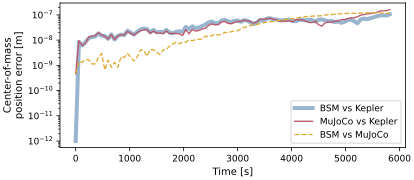
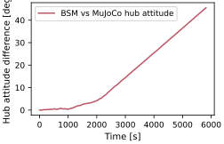
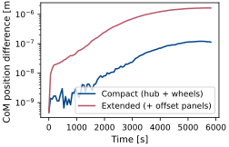

scenarioCompareOrbitMultibody
Multi-body-in-orbit scenario in the dynamics-engine comparison series (see scenarioCompareOrbit for the introduction to the two engines, and scenarioCompareRwPanels for the free-floating multi-body it builds on).
This scenario puts the reaction-wheel-and-panel multi-body of scenarioCompareRwPanels into a Keplerian orbit, adding point-mass gravity to the internal wheel and flex dynamics. This exposes a difference in how the two engines apply gravity to an extended body, so the scenario runs in two regimes:
Part A: a compact body (hub + reaction wheels). All massive parts sit at the hub origin (the reaction-wheel bodies carry negligible mass), so gravity acts at a single point and exerts no gravity-gradient torque. The two engines agree closely: both reproduce the analytic Kepler orbit to the RK4 truncation level (cross-engine orbit difference of order \(10^{-7}\) m), and the spinning-up wheels match to round-off. The hub attitude agrees to about \(10^{-4}\) rad, several orders coarser than the free-floating machine-precision floor of scenarioCompareRwPanels. This floor is not a gravity effect but the MuJoCo gyroscopic-bias round-off characterized in scenarioCompareTorque, which any body at the ~7.5 km/s orbital speed incurs (the same size with gravity on or off). Part A therefore sets the noise floor for the extended-body attitude comparison below.
Part B: an extended body (hub + reaction wheels + offset flexible panels). The two massive solar arrays sit well off the hub origin, and the engines apply gravity by different models:
BSM evaluates the gravitational acceleration once, at the system center of mass (tracked analytically as the panels flex) and applies it as a single uniform body force. A uniform field exerts no net torque about the center of mass, so BSM produces no gravity-gradient torque.
The MuJoCo C++ Module: NBodyGravity evaluates gravity per body, at each body’s own position. The offset panels sit at a slightly different radius than the hub, so they feel a slightly different acceleration. Forces at the separated body centers produce a net torque about the system center of mass. This model does not resolve gravity variation within an individual rigid body.
Part B therefore does not converge to machine precision in attitude. Its magnitude is consistent with the differential point-force scale over the orbit and builds as a libration modulated by the hub’s tumble.
As in the other attitude-bearing comparisons, the MuJoCo scene enables
highOrderAttitudeIntegration so the hub quaternion is advanced at the integrator’s
full order, and attitudes are compared with the principal rotation angle of the relative
direction cosine matrix, \(4\,\arctan(|\pmb\sigma_{\rm rel}|)\).
The script is found in the folder basilisk/examples/dynamicsComparison and executed
by using:
python3 scenarioCompareOrbitMultibody.py
Illustration of Simulation Results
For the compact body (Part A) each engine tracks the analytic Kepler orbit to its RK4 truncation level (about \(10^{-7}\) m), and the two engines agree to the same level, confirming both integrate the same two-body equation of motion through the internal multi-body coupling.

For the extended body (Part B) the hub attitudes separate: forces applied at the MuJoCo body centers exert a torque that the BSM single-point model omits. Over one orbit, the cross-engine attitude difference reaches 0.79 rad (46 degrees), nearly four orders of magnitude above the Part A floor. The response appears as a libration modulated by the hub’s tumble.

After matching the initial total-center-of-mass position and velocity, both the compact and extended center-of-mass trajectories agree within \(2\times10^{-6}\) m. The attitude, not the translational orbit, carries the differential-force effect.

Runtime cost
Wall-clock cost of propagating each regime (one full orbit) with each engine, reported
as the median of five measured trials after one discarded warm-up. Model setup is
excluded. Both the absolute times and speedup ratio are specific to the machine and
build. Generate the optional local CSV with
make -C docs comparison-runtime-tables; see
scenarioCompareOrbit for the benchmark requirements and interpretation.
Next comparison: scenarioCompareVariableMass adds fuel depletion, moving mass properties, thrust, and propellant slosh.
- scenarioCompareOrbitMultibody.buildBSM(withPanels, mu, dt, tf, recordDt, record=True)[source]
Build the Backsubstitution orbiting multi-body simulation.
- Parameters:
withPanels (bool) – include the offset flexible panels (Part B) or not (Part A).
mu (float) – gravitational parameter [m^3/s^2]
dt (float) – integrator time step [s]
tf (float) – final simulation time [s]
recordDt (float) – recorder sampling period [s]
record (bool, optional) – attach state and wheel recorders. Defaults to True.
- Returns:
(simulation, outputs, handles).- Return type:
tuple
- scenarioCompareOrbitMultibody.buildMujoco(withPanels, mu, dt, tf, recordDt, record=True)[source]
Build the MuJoCo orbiting multi-body simulation without propagating it.
Gravity is supplied by C++ Module: NBodyGravity, which evaluates the field at each body’s own position. For the compact Part A body every massive part is at the hub origin, so this reduces to a single-point field matching BSM; for the extended Part B body the offset panels see a slightly different field, producing the gravity-gradient difference.
- Parameters:
withPanels (bool) – include the offset flexible panels (Part B) or not (Part A).
mu (float) – gravitational parameter [m^3/s^2]
dt (float) – integrator time step [s]
tf (float) – final simulation time [s]
recordDt (float) – recorder sampling period [s]
record (bool, optional) – attach hub, center-of-mass, and wheel recorders. Defaults to True.
- Returns:
(simulation, outputs, handles).- Return type:
tuple
- scenarioCompareOrbitMultibody.gravityGradientRateEstimate(mu, oe0)[source]
Angular-acceleration scale for the modeled differential point gravity.
The numerator uses only the inertia contribution from the separation of the lumped body centers, because the gravity module applies one point force at each body center. The denominator includes the full initial system inertia about its center of mass.
- Parameters:
mu (float) – gravitational parameter [m^3/s^2]
oe0 (ClassicElements) – initial classical orbital elements
- Returns:
angular-acceleration scale [rad/s^2].
- Return type:
float
- scenarioCompareOrbitMultibody.hubInertiaBSM()[source]
BSM hub inertia: bare hub plus the three folded-in wheel tensors.
- Returns:
3x3 hub inertia tensor [kg*m^2].
- Return type:
numpy.ndarray
- scenarioCompareOrbitMultibody.initialBodyMassDistribution(withPanels)[source]
Return the initial body masses, center locations, and total center of mass.
Locations are expressed in the hub frame. The wheel centers coincide with the hub center, while the panel centers follow the common BSM/MJCF hinge convention.
- Parameters:
withPanels (bool) – include the two hinged panels.
- Returns:
(masses, centers, systemCoM)in kg and m.- Return type:
tuple
- scenarioCompareOrbitMultibody.initialMujocoRootState(withPanels, rCN_N, vCN_N)[source]
Convert a desired total-CoM state into the MuJoCo hub-origin state.
The initial attitude is identity and the hinge rates are zero, so the system CoM velocity relative to the hub is
omega_BN_B x c_B.
- scenarioCompareOrbitMultibody.initialOrbitState(mu)[source]
Return the initial inertial position and velocity and the classical elements.
- Parameters:
mu (float) – gravitational parameter [m^3/s^2]
- Returns:
(rN, vN, oe)with position [m], velocity [m/s], and theClassicElementsused to generate them.- Return type:
tuple
- scenarioCompareOrbitMultibody.keplerTruth(mu, oe0, times)[source]
Analytic two-body position history of the system center of mass.
- Parameters:
mu (float) – gravitational parameter [m^3/s^2]
oe0 (ClassicElements) – initial classical orbital elements
times (numpy.ndarray) – sample times [s]
- Returns:
inertial position history, shape
(N, 3)[m].- Return type:
numpy.ndarray
- scenarioCompareOrbitMultibody.mujocoModel(withPanels)[source]
Return the MJCF model: hub and three reaction wheels, optionally two hinged panels.
- Parameters:
withPanels (bool) – if True, attach the two offset flexible panels (Part B); if False, the compact hub-and-wheels body (Part A).
- Returns:
the MJCF XML string.
- Return type:
str
- scenarioCompareOrbitMultibody.panelRootDcm(hingeX)[source]
Return the root-frame DCM that makes both panels extend away from the hub.
- scenarioCompareOrbitMultibody.plotResults(regimes, ggRate)[source]
Build the scenario figures.
- Parameters:
regimes (dict) – per-regime result arrays from
run().ggRate (float) – gravity-gradient angular-acceleration scale [rad/s^2].
- Returns:
mapping from figure name to matplotlib figure.
- Return type:
dict
- scenarioCompareOrbitMultibody.relativePrincipalAngle(sigmaBSM, sigmaMujoco)[source]
Per-sample principal rotation angle between two MRP attitude histories.
- Parameters:
sigmaBSM (numpy.ndarray) – BSM MRP history, shape
(N, 3)sigmaMujoco (numpy.ndarray) – MuJoCo MRP history, shape
(N, 3)
- Returns:
principal angle per sample [rad].
- Return type:
numpy.ndarray
- scenarioCompareOrbitMultibody.run(showPlots=False, saveJson=False, saveTiming=False, resultsDir=None)[source]
Main function, see scenario description.
- Parameters:
showPlots (bool, optional) – if True, plot and show the simulation results. Defaults to False.
saveJson (bool, optional) – if True, write the comparison metrics to
results/scenarioCompareOrbitMultibody.json. Defaults to False.saveTiming (bool, optional) – if True, measure the BSM-vs-MJScene wall-clock cost of both regimes and write
results/scenarioCompareOrbitMultibody_runtime.csv. Defaults to False.resultsDir (str, optional) – explicit artifact directory. Defaults to the scenario
resultsfolder.
- Returns:
mapping from figure name to matplotlib figure.
- Return type:
dict
- scenarioCompareOrbitMultibody.runBSM(withPanels, mu, dt, tf, recordDt)[source]
Propagate the orbiting multi-body with the Backsubstitution C++ Module: spacecraft.
- scenarioCompareOrbitMultibody.runMujoco(withPanels, mu, dt, tf, recordDt)[source]
Propagate the orbiting multi-body with the MJScene.
- scenarioCompareOrbitMultibody.writeJsonSummary(regimes, ggRate, targetResults)[source]
Write a JSON summary of the comparison metrics to the
resultsfolder.- Parameters:
regimes (dict) – per-regime result arrays from
run().ggRate (float) – gravity-gradient angular-acceleration scale [rad/s^2].
targetResults (str) – directory for the JSON artifact